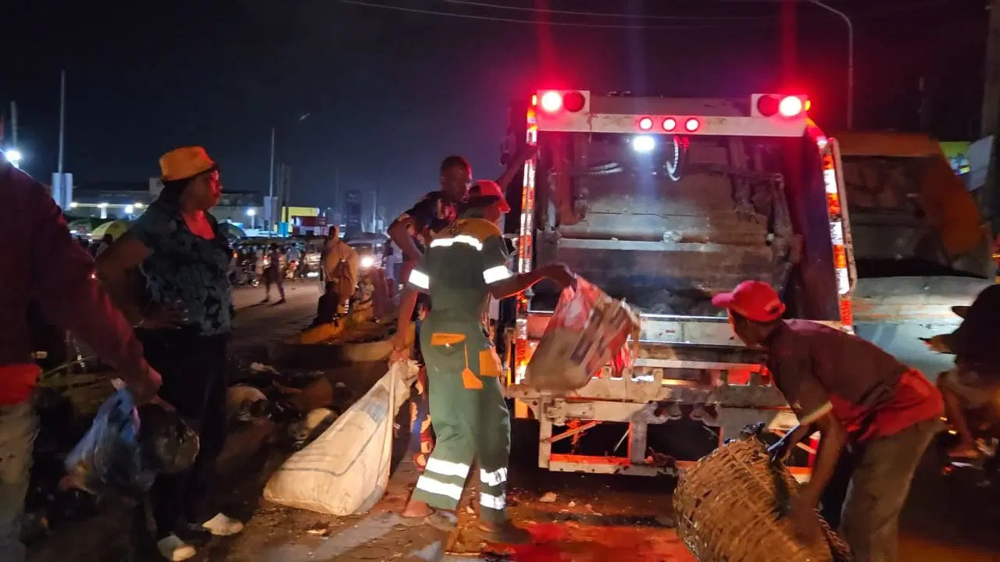

Waste crisis: LAWMA launches nighttime evacuation gangs

The Lagos Waste Management Authority (LAWMA) has launched nighttime waste clearance across the state to address mounting refuse heaps and improve sanitation ahead of the Christmas and New Year festivities. The operation began on Monday night along the Isheri–Igando–LASU–Iba corridor, where teams and heavy-duty equipment were deployed to clear identified waste black spots.
LAWMA Acting Managing Director Olajuwon Akinyemi led the operation at Igando Bus Stop, accompanied by the authority’s acting operations director, Olorunwa Tijani, and finance director, Kunle Adebiyi. Akinyemi said the work would extend to other major routes and busy corridors, including Ojota–Ikorodu Road, the Mushin–Moshalashi axis and the Lekki–Ajah corridor.
The authority said the clean-up is intended to restore Lagos’s environmental appeal and provide a cleaner, healthier setting for residents and visitors during the busy holiday period. To reduce the risk of cleared sites becoming dumping locations again, LAWMA said it was working with traditional institutions on community monitoring and enforcement.
Akinyemi also announced plans to establish more than 10 regional offices across Lagos, describing the restructuring as necessary to decentralise the authority’s operations. He said the offices would bring services closer to communities, improve coordination and accountability, and enable faster responses to sanitation problems.
He appealed for residents’ patience as the state addresses waste-management challenges and urged them to report service failures by Private Sector Participation waste operators through LAWMA’s official communication channels, so the authority can enforce compliance.
Source: Vanguard